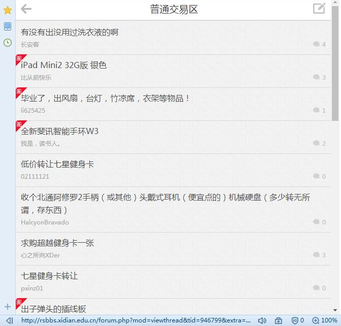
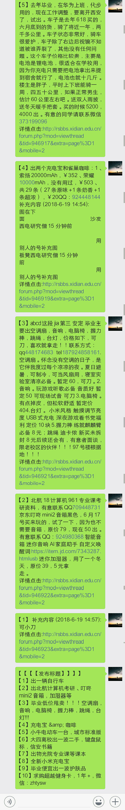

早上给老师整理完通信数据链的报告，就想写写我最近几天搞了一个睿思交易信息微信群推送的一个小小的项目。最近是毕业季，很多毕业生在睿思上卖东西，然而这一段时间研一的准备考试，研二的也在准备找工作的东西，很容易错过睿思上的一些好东西，我之前错过了一箱吃的，被别人捷足先登，简直是错失粮基，懊悔不已。
因此我在前几天想怎么才能把睿思上的交易信息通过微信自动发布推送，通过一阵捣鼓终于弄好了，步骤按照下面来做：
- 睿思交易帖的Python爬取
- 利用itchat包进行微信的登陆
- 云端的部署和Python后台程序的守护
信息爬取
考虑到之后会在外网的云服务器上来跑程序，所以所抓取的网页也必须是外网网页，那么不能直接用内网睿思的链接，这里可以用手机版的链接，这个在外网上也能够访问。http://rsbbs.xidian.edu.cn/forum.php?mod=forumdisplay&fid=110&mobile=2

然而该网站不能直接按照发帖时间排序，只能按照回帖时间排序，然而我查看html网页过后，发现tid这个参数越大，表示发帖时间越近，然后我姐爬取前三页的帖子的tid，标题，链接，并按照tid进行降序排列，每次发送之前没有发送过的帖子，并当帖子数量较多时，对帖子数量进行限制。接着我通过爬取的链接进入每个帖子对一楼，也就是发帖人详细描述信息进行爬取，这一块儿由于每个人描述习惯不同，爬取出来的信息的格式还需要进一步调整，这里我们不再做研究。步骤如下面
- 解析睿思交易手机版的网页的前page_num页；
- 爬取帖子的tid、title、链接保存在3个list之中；
- 将tid作为key值与其他两个属性组合成一个dict，按照key值排序，提取出钱send_num个values,也就是提取出最近send_num个发帖的标题和链接，将提取出的帖子标题与上一次最近发帖的第一个标题进行对比，找到上次发了帖子之后又新发的帖子，将新发的帖子提取出来。如果没有新发的帖子，程序直接休眠waittime时长，然后调至步骤1，如果有的话则进行下一步信息发送；
- 对新发的帖子html文件进行爬取，采用re.findall正则表达式和replace函数对信息进行提取和删除，将整理后的信息进行发送；
- 程序进行休眠waittime时长。
微信群发
在python中有个itchat包，该包能够对微信进行各种操作，现在我们就用她来进行微信的登陆和群发，itchat的安装什么的就不再说了，就来说说怎么用1
itchat.auto_login()
这个表示微信的登陆函数，其中也可以输入参数1
hotReload=True
会自动弹出一张二维码图，表示我扫一下二维码就可以了，后面一段时间内就直接登进去了，就像是把你的登录信息保存了，不再用扫来扫去，这在程序的调试时很方便，然而当程序什么的都在本地调好后，我建议将其换为1
enableCmdQR=2
因为在云服务器的linux窗口下并不会自动弹出二维码，改成这样后就能够将二维码在窗口直接打印出来
登陆微信后，切记别将网页版的微信挤下来，鉴于很多人习惯于在电脑客户端使用微信，这里我建议用个小号去登陆。1
itchat.search_chatrooms()
函数中的输入为群名，我们需要将该群保存在微信通讯录的群聊之中
云服务器的搭建
- 首先得购买一个服务，在这里我推荐一个超级便宜的云服务器，通过学生认证之后每个月只需九块5毛钱>_<，那就是阿里云轻量应用服务器。买了之后把密码最好改成自己好记的，可直接用其默认的应用和系统。
- 接下来就进行环境的部署，先安装一个xshell，左上角新建会话，输入主机号，然后输入账号和密码，一般初始账号为root，为了方便可记住用户名和密码。
- 然后CentOS 7下Python 3的部署 - CSDN博客 https://blog.csdn.net/kyotrue/article/details/74279128 可参考该链接完成依赖组件和python的安装，后面那个ss可以不用去管它，完成后同样的也需要安装pip3，根据python程序所调用的包并用其安装一些python包
- 运行环境弄好之后，我们cd切换目录，输入rz命令进行上传py文件至该目录下（rz -y命令可将修改后的文件上传覆盖），接下来运行程序
1
# python3 yourpyfile.py
等到自己登陆微信成功后，然后ctrl+z暂停程序，再输入1
bg %n
n表示你的进程编号，将进程放入后台，再输入1
nohup python3> myout.file 2>&1 &
将进程应用保护起来（这里需要对nohup进行安装），如果不保护的话，当你退出主机后程序也就自动停下来，最后输入exit退出服务器
代码
上一下自己丑陋的代码T_T1
2
3
4
5
6
7
8
9
10
11
12
13
14
15
16
17
18
19
20
21
22
23
24
25
26
27
28
29
30
31
32
33
34
35
36
37
38
39
40
41
42
43
44
45
46
47
48
49
50
51
52
53
54
55
56
57
58
59
60
61
62
63
64
65
66
67
68
69
70
71
72
73
74
75
76
77
78
79
80
81
82
83
84
85
86
87
88
89
90
91
92
93import sys
import re
import urllib
import itchat
import time
import numpy as np
itchat.auto_login(enableCmdQR=2)
chat_room=itchat.get_chatrooms(update=True)
name="睿思交易"
iRoom=itchat.search_chatrooms("睿思交易")
for room in iRoom:
if room['NickName']==name:
UserName=room['UserName']
break
waittime=10800
page_num=3
send_num=10
#sys.setdefaultencoding('utf-8')
user_agent = 'User-Agent: Mozilla/4.0 (compatible; MSIE 7.0; Windows NT 5.1; Maxthon 2.0)'
headers = {'User-Agent':user_agent}
url_page_pre='http://rsbbs.xidian.edu.cn/forum.php?mod=forumdisplay&fid=110&page='
url_page_fnl='&mobile=2'
#url='https://www.aifindu.com/'
#解析网页
last_title=''
while(True):
info_tid=[]
info_title = []
info_data = []
for row in range(page_num):
url=url_page_pre+str(row+1)+url_page_fnl
html = urllib.request.urlopen(url).read().decode()
info_tid=info_tid+(re.findall('tid=(.+?)&',html))
info_title =info_title+(re.findall('(.+?)<span class="by">',html))
# info_time = re.findall('span title=(.+?)</span></span>',html)
info_data =info_data+(re.findall('<a href="(.+?)" >',html))
info_comb= np.c_[info_title,info_data]
#info_comb= np.hstack((info_tid,info_title,info_data))
info_dict=(dict(zip(info_tid, info_comb)))
info_sort= list(sorted(info_dict.items(), key=lambda k: k[0],reverse = True))
#updata data
info_send=list(info_sort)
for row in range(send_num):
info_title[row]=(info_sort[row][1][0])
info_data[row] = (info_sort[row][1][1])
info_title=info_title[0:send_num]
info_data = info_data[0:send_num]
# 找到发帖
range_context=0
for index in range(len(info_title)):
if info_title[index]==last_title:
range_context=index
break
if index>=send_num-1:
range_context=index
break
last_title=info_title[0]
if range_context==0:
# itchat.send_msg('暂无新发布',UserName)
time.sleep(waittime)
continue
fabu_title = '【【【【发布标题】】】】' + '\n'
for index in range(range_context+1):
fabu_title=fabu_title+'【'+str(index+1)+'】'+info_title[index]+'\n'
for index in range(range_context,-1,-1):
str_url = info_data[index].replace('amp;', '').replace('"', '')
url_context = 'http://rsbbs.xidian.edu.cn/'+str_url
html = urllib.request.urlopen(url_context).read().decode()
info_context_temp_list=re.findall('<div class="message">([\s\S]+?)<div class="grey quote">',html)
if len(info_context_temp_list)==0:
info_context_temp_list = re.findall('<div class="message">([\s\S]+?)</div>', html)
if len(info_context_temp_list)==0:
continue
info_context_temp0=info_context_temp_list[0]
info_context_temp1 = info_context_temp0.replace(' ', ' ')
del_fuhao=re.findall('<(.*?)>',info_context_temp1)
for row in range(len(del_fuhao)):
info_context_temp1=info_context_temp1.replace('<'+del_fuhao[row]+'>','')
del_str=re.findall('(.*?)\r\n',info_context_temp1)[0]
info_context=info_context_temp1.replace(del_str,'').replace('<br />','').replace("\r\n", "").replace("\n\n", "").replace(' ','').replace(' ','').replace(' ',' ')
itchat.send_msg('【'+str(index+1)+'】'+info_context+'\n'+'详情点击:'+url_context, UserName)
itchat.send_msg(fabu_title, UserName)
time.sleep(waittime)
微信群接收效果如下：

这里正则表达式不太会写，比较丑陋，后面还得多多学习。